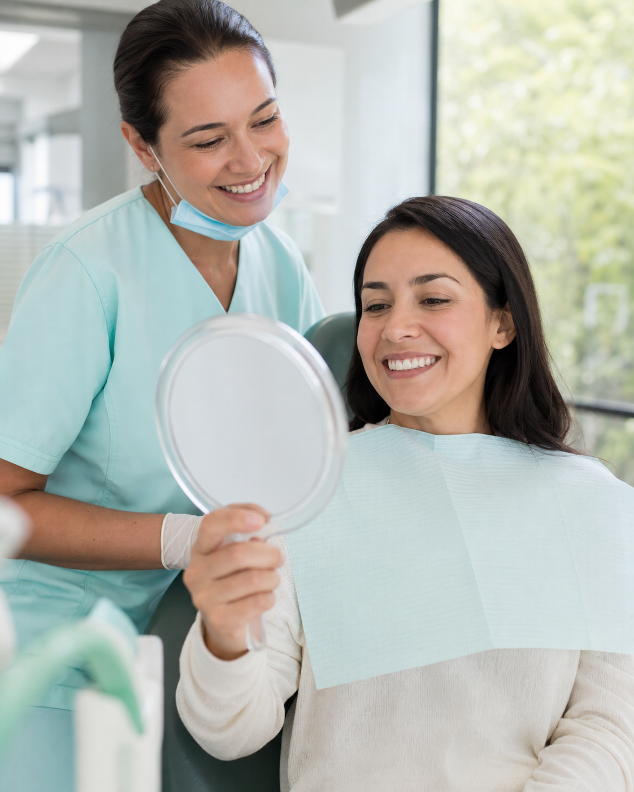
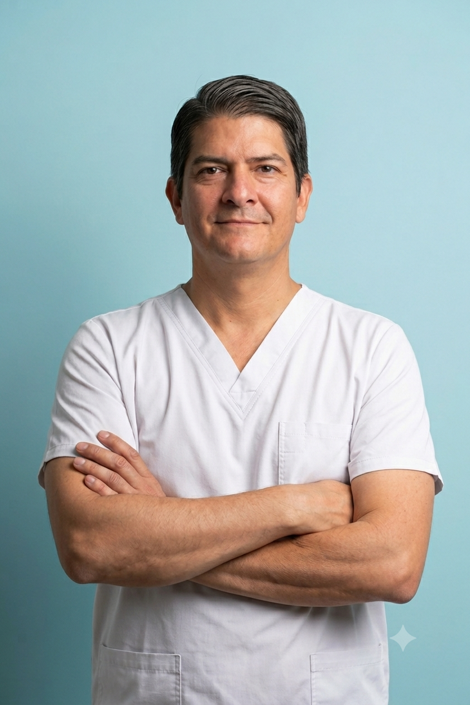
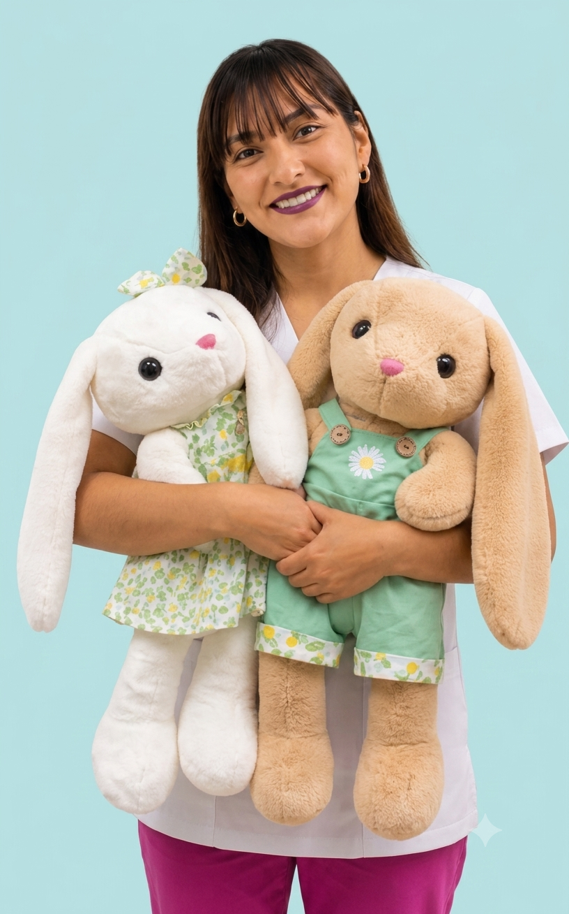

Cada sonrisa se diseña con precisión, no con suerte.
En Odontomark partimos del diseño de tu sonrisa: definimos cómo quieres verte y armamos el plan de tratamiento alrededor de ese resultado, con especialistas certificados en cada etapa.

Especialidades para cada etapa de tu sonrisa.
Selecciona una especialidad para conocerla y ver cómo trabajamos. El carrusel avanza automáticamente.
Una sonrisa puede ser el comienzo de un gran cambio.
Antes de hablar de un tratamiento, nos tomamos el tiempo para escucharte: queremos conocer tu historia, comprender qué te preocupa y saber qué significa para ti volver a sonreír.
Te escuchamos primero
Escuchamos tus opiniones, resolvemos tus dudas y diseñamos un tratamiento de acuerdo con tus necesidades y objetivos.
Tratamos personas, no solo dientes
Entendemos que muchas personas llegan porque dejaron de sonreír, evitan las fotografías o perdieron confianza en sí mismas.
Recuperar confianza
Nuestro propósito es ayudarte a sonreír, hablar, comer y relacionarte con mayor seguridad, favoreciendo tu bienestar cotidiano.
Acompañamiento humano
Te brindamos una atención cercana, respetuosa y profesional desde la primera consulta hasta el final de tu tratamiento.
No solo transformamos sonrisas. Ayudamos a las personas a recuperar la confianza para volver a sonreír.
Dos sedes, misma forma de trabajar.
Elige la más cercana a ti. Ambas atienden todas las especialidades.
Villa María del Triunfo
Calle San Eugenio 316, PJ San Gabriel, Villa María del Triunfo, Lima.
Ver en Google Maps →Especialistas colegiados, no practicantes.
Profesionales comprometidos con una atención cercana, coordinada y especializada en cada etapa de tu tratamiento.
Dr. Ronald Siancas
Diseño de SonrisaCOP 00000 · RNE 00000
Dr. Henry Muller
Ortodoncia y ortopedia maxilarCOP 00000 · RNE 00000Dra. Marianny Luque
OrtodonciaCOP 00000 · RNE 00000
Dra. Ana Villareal
OdontopediatríaCOP 00000 · RNE 00000Dra. [Nombre]
Estética dentalCOP 00000 · RNE 00000Agenda tu evaluación inicial.
Escríbenos por WhatsApp o completa el formulario. Respondemos en horario de atención.
Sede Villa María del Triunfo
Calle San Eugenio 316, PJ San Gabriel, Lima
Sede Villa El Salvador
1 De Mayo 510, Villa El Salvador 15828
Horario
Lunes a sábado, 9:00 a.m. – 8:00 p.m.
+51 902 956 428
Correo
contacto@odontomark.pe
Solicita tu cita
Te contactamos para confirmar fecha y hora.